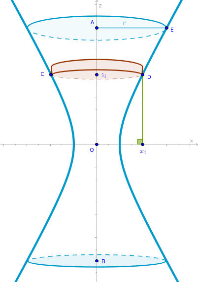

Circular One-sheeted Hyperboloid
Problem
Find the volume of a one-sheeted circular hyperboloid of revolution given by its Cartesian equation:
 $$\frac {x^2}{a^2} + \frac {y^2}{a^2} - \frac {z^2}{c^2} = 1$$Either the height of the hyperboloid along the \(z\) axis \(h = AB\) or the corresponding value along the \(x\) axis \(r = AE\) is given, see the drawing.
Solution
Choose a thin right circular cylinder as a primitive part to approximate the volume of the one-sheeted circular hyperboloid and position it as shown.
Consider the corresponding half of the hyperboloid and cut \(AO\) into \(n\) line segments of equal length:
$$\frac {h}{2n}$$ The volume of the \(i-\)the primitive cylinder then is: $$V'_i = \pi x_i^2 \frac {h}{2n}$$To obtain the value of \(x_i^2\) cut the hyperboloid with the \(y = 0\) plane and substitute \(y = 0\) into its Cartesian equation:
$$\frac {x_i^2}{a^2} - \frac {z_i^2}{c^2} = 1$$ $$x_i^2 = a^2\Big(1 + \frac {z_i^2}{c^2}\Big)$$where:
$$z_i = \frac {h}{2n} \times i$$and:
$$x_i^2 = a^2\Big(1 + \frac {h^2}{4c^2n^2} i^2\Big)$$ $$\begin{equation} V'_i = \frac {\pi a^2 h}{2n}\Big(1 + \frac {h^2}{4c^2n^2} i^2\Big) \end{equation}$$The volume of the entire hyperboloid is the sum of volumes of its two halves:
$$V' = 2 \times \sum_{i=1}^n V'_i =$$ $$2 \times \sum_{i=1}^n \frac {\pi a^2 h}{2n}\Big(1 + \frac {h^2}{4c^2n^2} i^2\Big) =$$ $$\frac {\pi a^2 h}{n}\Big(\sum_{i=1}^n + \sum_{i=1}^n \frac {h^2}{4c^2n^2} i^2\Big) =$$ $$\frac {\pi a^2 h}{n}\Big(n + \frac {h^2}{4c^2n^2} \sum_{i=1}^n i^2 \Big) =$$ $$\frac {\pi a^2 h}{n}\Big(n + \frac {h^2}{4c^2n^2} \frac {n(1 + n)(2n + 1)}{6}\Big) =$$ $$\frac {\pi a^2 h}{n}\Big(n + \frac {h^2}{4c^2n^2} \frac {n^3(1 + \frac {1}{n})(2 + \frac {1}{n})}{6}\Big) =$$ $$\frac {\pi a^2 h}{n}\Big(n + \frac {h^2}{4c^2} \frac {n(1 + \frac {1}{n})(2 + \frac {1}{n})}{6}\Big) =$$ $$\pi a^2 h\Big(1 + \frac {h^2}{24c^2}\Big(1 + \frac {1}{n}\Big)\Big(2 + \frac {1}{n}\Big)\Big) =$$ $$\pi a^2 h\Big(1 + \frac {h^2}{24c^2}\Big(2 + \frac {3}{n} + \frac {1}{n^2}\Big)\Big)$$Apply the corresponding limit to \(V'\):
$$V = \lim_{n\to +\infty} V' =$$ $$\lim_{n\to +\infty} \pi a^2 h \Big(1 + \frac {h^2}{24c^2}\Big(2 + \frac {3}{n} + \frac {1}{n^2}\Big)\Big) =$$ $$\pi a^2 h\lim_{n\to +\infty} \Big(1 + \frac {h^2}{24c^2}\Big(2 + \frac {3}{n} + \frac {1}{n^2}\Big)\Big) =$$ $$\bbox[#e8e8e8,3pt]{V = \pi a^2 h\Big(1 + \frac {h^2}{12c^2}\Big)}$$
Elliptic One-sheeted Hyperboloid
has the following Cartesian equation:
$$\begin{equation} \frac {x^2}{a^2} + \frac {y^2}{b^2} - \frac {z^2}{c^2} = 1 \end{equation}$$We choose thin right elliptic cylinders as primitive parts positioned in the same way right circular cylinders are positioned within the circular hyperboloid. The volume of the \(i-\)th primitive cylinder then is:
$$V'_i = \pi x_i \times y_i \times \frac {h}{2n}$$where we again only considering the corresponding half of the elliptic hyperboloid.
To obtain the values of \(x_i\) and \(y_i\) in given terms we first cut the hyperboloid with the \(y = 0\) plane and substitute \(y = 0\) into (2):
$$\frac {x_i^2}{a^2} - \frac {z_i^2}{c^2} = 1$$ $$x_i = a \sqrt {1 + \frac {z_i^2}{c^2}}$$and then we cut the hyperboloid with the \(x = 0\) plane and substitute \(x = 0\) into (2):
$$\frac {y_i^2}{b^2} - \frac {z_i^2}{c^2} = 1$$ $$y_i = b \sqrt {1 + \frac {z_i^2}{c^2}}$$where for \(z_i\) we have:
$$z_i = \frac {h}{2n} \times i$$Then:
$$V'_i = \pi a \sqrt{1 + \frac {z_i^2}{c^2}} \times b \sqrt{1 + \frac {z_i^2}{c^2}} \times \frac {h}{2n} =$$ $$\begin{equation} \frac {\pi abh}{2n}\Big(1 + \frac {h^2}{4c^2n^2} i^2\Big) \end{equation}$$We observe that (1) and (3) are almost identical: the \(a^2\) in (1) is replaced with \(a \times b\) in (3) and hence:
$$\bbox[#e8e8e8,3pt]{V = \pi abh\Big(1 + \frac {h^2}{12c^2}\Big)}$$\(\blacksquare\)